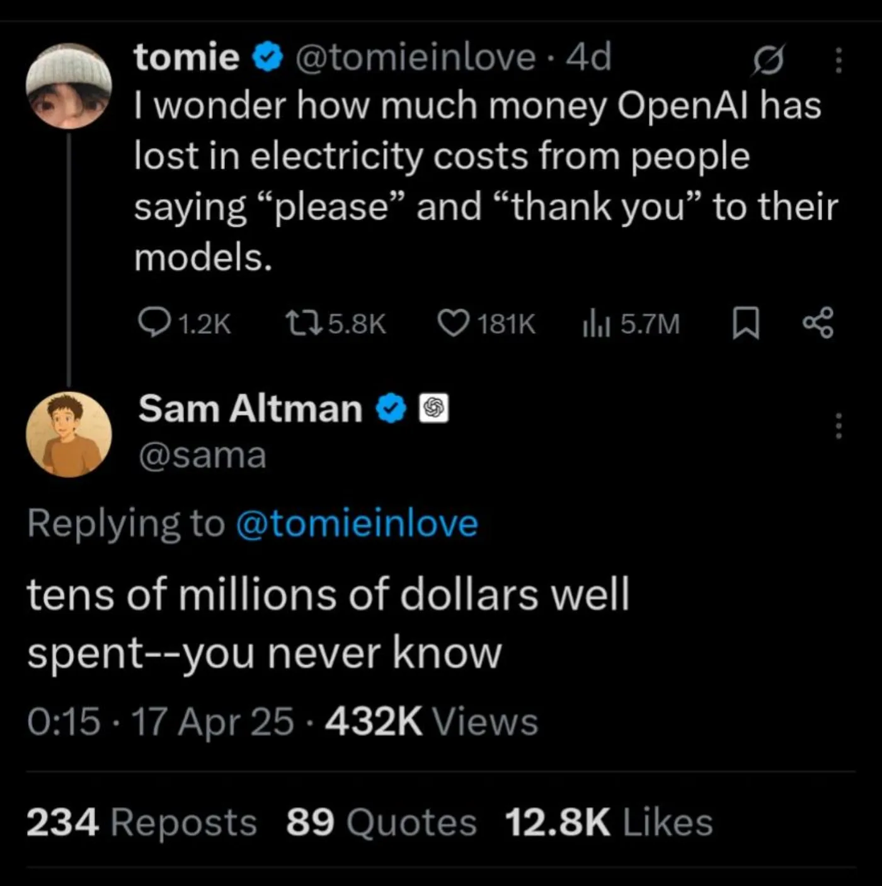
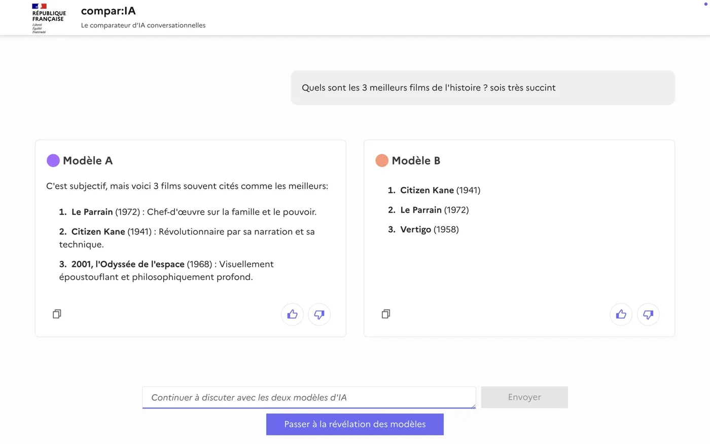

Entraînement vs inférence
Un modèle consomme à deux moments : quand on le fabrique, et chaque fois qu'on s'en sert.
Deux moments, deux profils
Entraînement
Le modèle apprend à générer du texte. Beaucoup d'énergie, plusieurs semaines, une seule fois par modèle.
Utilisation

Le modèle répond à une question. Peu d'énergie par demande, mais le cumul devient considérable.
Entraîner un modèle : Llama 4
≈ 5 GWh
pour l'entraînement, soit la consommation d'environ 1 100 ménages français pendant un an.
Meta, Llama 4 Model Card, 2025 : 5,0 M + 2,38 M heures GPU à 700 W. En comptant le reste du serveur et le refroidissement, on monte vers 7 à 8 GWh. Ménage français : 4 700 kWh par an, toutes énergies de chauffage confondues.
Un chiffre reconstitué
Meta ne publie pas de gigawattheures, mais 7,4 millions d'heures de carte graphique. Le chiffre vient de cette conversion.
Il ne couvre que deux modèles sur trois : Behemoth, le plus gros, n'a jamais été publié.
Meta, Llama 4 Model Card, 2025 : 5,0 M heures GPU pour Scout, 2,38 M pour Maverick, à 700 W.
Se servir d'un modèle : GPT-5
Écrire un texte de cinq pages, soit 5 000 jetons :
8,7 Wh
soit 50 à 70 % de la batterie d'un smartphone.
Ce n'est pas une mesure, c'est une simulation : EcoLogits sort une fourchette de 6,7 à 10 Wh.
EcoLogits 0.10.2, mix électrique mondial moyen, PUE 1,2, 5 000 jetons de sortie. OpenAI ne publie ni la taille ni l'architecture de GPT-5 : EcoLogits estime lui-même 300 milliards de paramètres, dont 10 à 30 % actifs. Batterie de référence : 14 à 15 Wh, celle d'un iPhone récent.
Et si tout le monde s'y met
1 % de la population mondiale écrit ce texte de cinq pages chaque jour, pendant un an. Pour fournir cette électricité, il faut la production annuelle de :
60 éoliennes
Calcul : 82 millions de personnes × 8,7 Wh × 365 jours = 260 GWh par an. Une éolienne de 2 MW à 25 % de facteur de charge produit 4,4 GWh par an. Population mondiale : ONU, World Population Prospects 2024. Parc éolien : RTE, bilan électrique 2025.
Soixante, ou trente ?
Soixante éoliennes de 2 MW, la moyenne du parc français existant. Avec les machines qu'on installe aujourd'hui, 3,5 MW, la réponse serait plutôt trente. En mer, une dizaine.
Une demande minuscule, répétée, finit par se compter en parc éolien.
Puissance moyenne du parc français : RTE, bilan électrique 2025.
« S'il te plaît », « merci »
Chaque mot de politesse est un jeton de plus à traiter.
À l'échelle de ChatGPT, ces jetons se comptent en électricité et en argent.

Sam Altman (@sama) sur X, 17 avril 2025, en réponse à @tomieinlove.
L'analogie de la voiture
Construire la voiture
C'est l'entraînement : une opération unique, très gourmande en ressources.
Rouler avec
C'est l'inférence : chaque trajet coûte peu, mais on roule tous les jours, et le nombre de trajets n'a pas de limite visible.
L'usage peut peser plus lourd
Les indicateurs d'impact regardent surtout l'inférence. De quoi croire que se servir d'un modèle pèse moins lourd que le fabriquer.
Cumulé sur des millions de gens qui interrogent un modèle chaque jour, l'usage peut dépasser l'entraînement.
Ce que compte compar:IA
L'« Énergie de génération estimée » du bilan ne couvre que l'inférence. EcoLogits, la méthode derrière ce chiffre, ne compte pas l'entraînement.
Le chiffre affiché après un duel est un plancher, pas le coût complet d'un modèle.

Méthode EcoLogits 0.10.2, telle qu'employée par compar:IA.